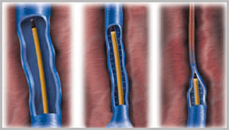

Publicado el
Buenos días! Estuve en varios hospitales y solo me falta visitar la
curandera, las varices no dejan vivir. En mi juventud, me dedicaba al levantamiento de
pesas, y además de las rodillas enfermas y la hernia en la espalda, me gané otro problema.
Tengo una alergia severa a la anestesia, por lo que no puede someterme a una cirugía. Yo sé
que debe haber buenos remedios, por favor, dime ¿cómo elegir el que verdaderamente me
ayudará? Estoy muy cansado de los dolores diarios, casi dejé de dormir y no veo una forma de
salir de esto.
¡Gracias!
Respuestas de especialistas:
Vilma Perez, flebólogo
, el producto para varices de última generación, solucionará tu problema. Contiene solo ingredientes naturales que alivian instantáneamente el dolor, la fatiga y la hinchazón. Y también contribuyen a deshacerse de la red vascular y las venas varicosas.
Mario Rodríguez, terapeuta
Estoy de acuerdo con mi colega, porque hoy es el remedio más eficaz y asequible. Me gustaría añadir que la clave para una cura rápida es la regularidad. Frota abundantemente la crema en las áreas problemáticas hasta la absorción completa, es deseable hacerlo dos veces al día. Y en lo adelante, no te olvides de usarlo como un remedio preventivo.
Mariana Díaz, cirujano plástico
Prueba , te ayudará al 100%. Sus ingredientes son muy potentes. En el transcurso de la aplicación, notará una diferencia significativa. El dolor, la fatiga, la hinchazón pasarán, la condición de las venas volverá a la normalidad. Lo principal es no olvidar limitar la actividad física durante el curso, para no provocar una recaída de la enfermedad.
Fidel García, médico flebólogo
es un remedio para el tratamiento de las varices que no tiene análogos en el mundo. La crema se considera la mejor no solo porque su efectividad ha sido clínicamente probada, sino también porque su composición es completamente natural y segura para los humanos. puede ser utilizada por personas de todas las edades, así como por personas alérgicas: la crema ha superado todas las etapas de prueba y ha demostrado ser hipoalergénica y segura. Los extractos y aceites naturales integrados en la fórmula de la crema la hacen efectiva, y he notado mejoras significativas en mis pacientes después de dos semanas de uso. Este es un resultado realmente impresionante y estoy completamente de acuerdo con mis colegas en que ayudará a resolver su problema.
